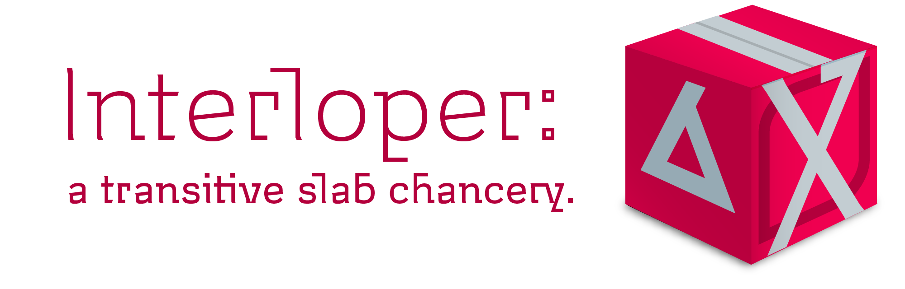
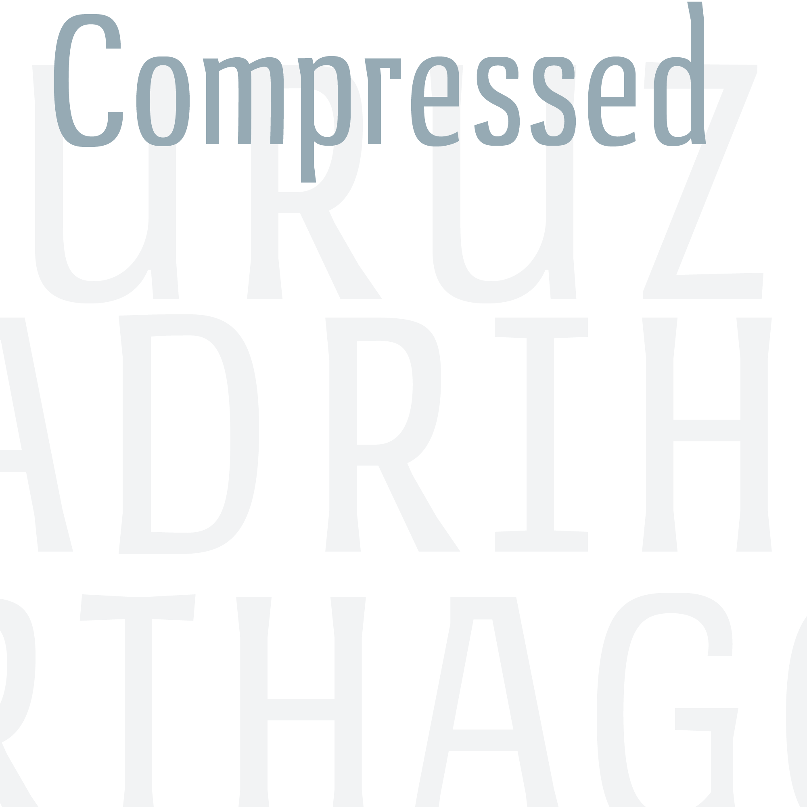

Hi, {{ content.title }}
{% endfor %}Brahmin is a typeface of pure ideals and simple truths. It invites readers with a grand promise—a world of abstract form. A rhythm of geometric circles and precise angles dazzles the eye as the letters reveal their inner forms: smooth polygons with linguistic value.


But unlike most idealists, Brahmin’s promise pans out. Words link into lines, lines into paragraphs, without losing the reader in a labyrinth of alike forms. Nothing is sacrificed in search of geometric perfection: with a fundamentally humanist structure and subtle formal asymmetries, Brahmin’s paragraphs are realized in stunning relief.
Design
Helvetica and Futura are not text typefaces. So why do visual designers use them that way?
In short, they want to come across as casual and familiar. They should. These two qualities—‘informality’ and ‘normality’—are the essence of building mass appeal.

Futura and Helvetica are massively appealing. They are informal: their letterforms need no special pens to write or draw, so they look like handprinting. And they are normal: their designs, smooth and symmetrical, evoke geometric circles—the most regular shapes, the same shapes with which students learn to write. Visually they draw no extra attention to themselves. They have no identifying characteristics to readers without a trained eye.

But they are not text faces. Helvetica is spaced too tighly for text, especially at thinner weights, making lighter paragraphs look like a pile of coathangers. Both it and Futura’s designs are very ‘closed’. forms are made more circular by subtracting as little as possible from the ‘o’, which makes a ‘c’, for example, look too similar. Futura takes this principle to an extreme. Its letterforms are geometrically modular, so a ‘d’ is made from the same pieces as its one-storey ‘a’. This makes for a dazzling look, but in a paragraph, will throw the reader’s eye into a maze of symmetry.

Brahmin is made to exceed the standards of mass appeal, providing smooth, simple letters that still give a great text experience at small sizes. Its slightly boxy appearance helps it render crisply on screen and in laser-print, even at low resolutions.
Features
Each of Brahmin's eight weights comes with more than eight hundred characters, fully equipping you take on the most complex and specialized typesetting jobs in any Latin language. Read about Brahmin's special characters and unique technologies below.

latin plus
Ergata Brahmin caters to every language that uses the Latin Alphabet, including Vietnamese, Chinese Pinyin, and Turkish, as well as modern Germanic and Romance languages. For details on the Latin Plus standard, visit Underware.nl.

ligatures
Sometimes, letters set side-by-side are so wide, they collide. This, I can’t abide. So that’s why inside my type, I decided to hide ligatures, like ‘fi,’ computerized to auto-apply to the words you write, to save you time and look pretty tight.

adaptive caps
CAPITAL LETTERS are made to be put at the beginning of lowercase words. The PROBLEM WITH THEM is, they don’t look good next to each other unless you SPACE THEM OUT—a waste of time, because even then, they’re so tall that they make the line look awkward. Adaptive caps SOLVE THIS PROBLEM by replacing any string of ALL CAPITALS with short, wide spacious caps—as you type!

contextuals
Adaptive caps automatically modify certain punctuation and symbols next to them, such as quotes, which are enlarged, and dashes, and parenthesis which are nudged up to float at the capital optical center. When listing the time, the colon floats as well.
Downloads


Both volumes of Brahmin are currently available as free downloads.


Interloper is a stylish text and display face with a monoline design and wide, spacious letters. Interloper is per fect for headings and sho rt text applications. She pairs well with Uruz or Brahmin as a pseudo-italic in rich text environments.


Design
Like Museo, Interloper extends a monoline-skinned geometric–humanist skeleton into transitive slab-serifs. Unlike Jos Buivenga’s contemporar y classic, Interloper's design emphasizes right angles, long ascender-serifs, and organic curves. This mysterious mix of features brings an exotic, otherworldly flavor to the transitive style.
Features

Each of Interloper' six weights comes with more than seven hundred characters, fully equipping you take on the most complex and specialized typesetting jobs in any Latin language. Read about Brahmin's special characters and unique technologies below.

latin plus
Ergata Interloper caters to every language that uses the Latin Alphabet, including Vietnamese, Chinese Pinyin, and Turkish, as well as modern Germanic and Romance languages. For details on the Latin Plus standard, visit Underware.nl.

ligatures
Sometimes, letters set side-by-side are so wide, they collide. This, I can’t abide. So that’s why inside my type, I decided to hide ligatures, like ‘fi,’ computerized to auto-apply to the words you write, to save you time and look pretty tight.

adaptive caps
CAPITAL LETTERS are made to be put at the beginning of lowercase words. The PROBLEM WITH THEM is, they don’t look good next to each other unless you SPACE THEM OUT—a waste of time, because even then, they’re so tall that they make the line look awkward. Adaptive caps SOLVE THIS by replacing any string of ALL CAPITALS with short, wide spacious caps—as you type!

contextuals
Adaptive caps automatically modify certain punctuation and symbols next to them, such as quotes, which are enlarged, and dashes, and parenthesis which are nudged up to float at the capital optical center. When listing the time, the colon floats as well.
Purchase

Ergata Interloper includes six weights from razor thin to medium text.
AVAILABLE SOON

Uruz' oarsmen row in synchrony, surfaces smoothly sanded into sublime alignment. Uprightly walking and gloomy-browed, these squarebuilt creatures do not find an ideal in geometric perfection, but only in the even texture of the emergent whole.


Design
The rule of the lines is stringently enforced among the Uruz fonts. Any sharp or curved glyph that overshoots an alignment boundary is flattened into a short bar. In the case of curved glyphs like s, the exterior is flattened, but the counterform is not. As in classical gothic lettering, the lowercase appears to form a strip or band along the x-row, making the interval of lines in a paragraph especially distinct.
Features
Each of Uruz' eight weights comes with more than eight hundred characters, fully equipping you take on the most complex and specialized typesetting jobs in any Latin language. Read about Uruz's special characters and unique technologies below.

latin plus
Ergata Uruz caters to every language that uses the Latin Alphabet, including Vietnamese, Chinese Pinyin, and Turkish, as well as modern Germanic and Romance languages. For details on the Latin Plus standard, visit Underware.nl.

ligatures
Sometimes, letters set side-by-side are so wide, they collide. This, I can’t abide. So that’s why inside my type, I decided to hide ligatures, like ‘fi,’ computerized to auto-apply to the words you write, to save you time and look pretty tight.

adaptive caps
CAPITAL LETTERS are made to be put at the beginning of lowercase words. The PROBLEM WITH THEM is, they don’t look good next to each other unless you SPACE THEM OUT—a waste of time, because even then, they’re so tall that they make the line look awkward. Adaptive caps SOLVE THIS PROBLEM by replacing any string of ALL CAPITALS with short, wide spacious caps—as you type!

contextuals
Adaptive caps automatically modify certain punctuation and symbols next to them, such as quotes, which are enlarged, and dashes, and parenthesis which are nudged up to float at the capital optical center. When listing the time, the colon floats as well.
Purchase

Uruz Text includes four weights from Regular to Bold. Licences are not yet for sale.

Uruz Condensed includes three weights: Regular, Medium, and Semibold. Licences are not yet for sale.
AVAILABLE SOON

AVAILABLE SOON

An unlikely duo: a well-mannered neo-classical and a bombastic egyptian. Candor is a cousin of Interloper, and these fonts do a great job enlivening a complex page. Uruz and Canticle are a good pair for a more sober approach.


Design

Features

Canticle includes more than four hundred characters and supports both Cyrillic and Armenian as well as many Latin languages. Candor, still in development, only includes a Latin Set and punctuation. Read about Canticle and Candor's special features below.

latin plus
Ergata Canticle currently supports around half of the languages in the latin plus standard. Spanish and Portuguese are both supported.Underware.nl.

ligatures
Sometimes, letters set side-by-side are so wide, they collide. This, I can’t abide. So that’s why inside my type, I decided to hide ligatures, like ‘fi,’ computerized to auto-apply to the words you write, to save you time and look really tight.

adaptive caps
CAPITAL LETTERS are made to be put at the beginning of lowercase words. The PROBLEM WITH THEM is, they don’t look good next to each other unless you SPACE THEM OUT—a waste of time, because even then, they’re so tall that they make the line look awkward. Adaptive caps SOLVE THIS by replacing any string of ALL CAPITALS with short, wide spacious caps—as you type!

contextuals
Adaptive caps automatically modify certain punctuation and symbols next to them, such as quotes, which are enlarged, and dashes, and parenthesis which are nudged up to float at the capital optical center. When listing the time, the colon floats as well.

cyrillic

armenian
Purchase

Just two fonts that work well together.